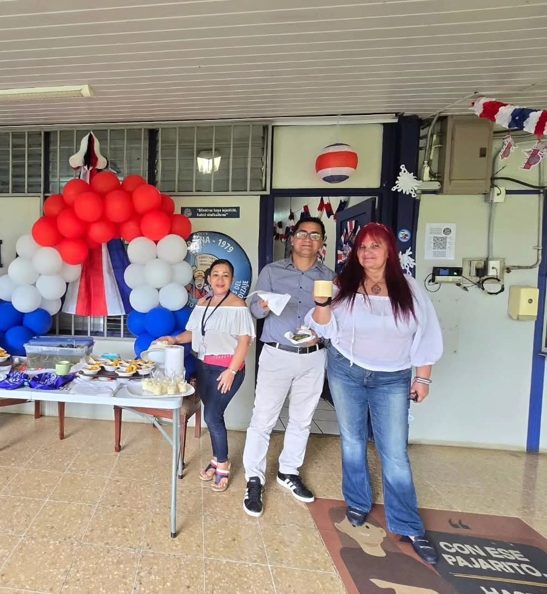

Conócenos
Quiénes somos
SITRAINA es el Sindicato de Trabajadores del Instituto Nacional de Aprendizaje (INA), una organización comprometida con la defensa de los derechos laborales y el bienestar de sus afiliados.
Desde nuestra fundación, hemos trabajado con compromiso para defender los intereses colectivos de los empleados del INA, promoviendo la unidad, la solidaridad y la participación activa en la defensa del trabajo digno.
Representamos a instructores, personal administrativo, técnicos y funcionarios que contribuyen al éxito del Instituto Nacional de Aprendizaje. Creemos en el diálogo, la negociación colectiva y la acción organizada como herramientas para lograr justicia social y equidad en el entorno laboral.
Nuestro compromiso es exceder las expectativas de nuestros afiliados, ofreciendo apoyo legal, formación sindical y representación efectiva ante la institución.

Nuestra identidad
Misión
Promover la unidad y defender los derechos laborales de los trabajadores del Instituto Nacional de Aprendizaje (INA), garantizando condiciones de trabajo dignas, mediante la negociación colectiva y la representación efectiva.
Visión
Ser el sindicato líder y referente a nivel nacional, que impulse el desarrollo profesional de sus afiliados y contribuya al mejoramiento continuo del sistema educativo técnico en Costa Rica.
Nuestros valores
- Unidad: Trabajo conjunto por objetivos comunes.
- Justicia: Equidad en los derechos laborales.
- Solidaridad: Apoyo mutuo entre afiliados.
- Transparencia: Honestidad en cada acción.